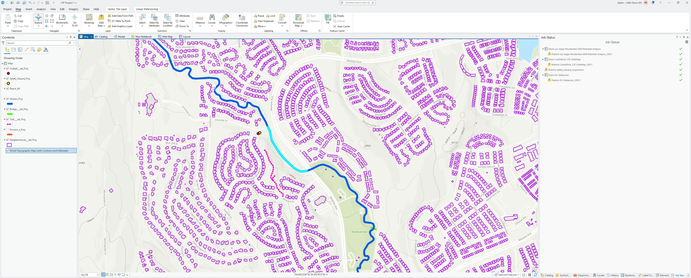
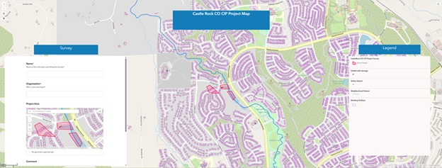
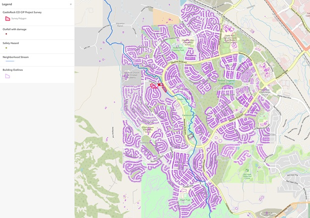
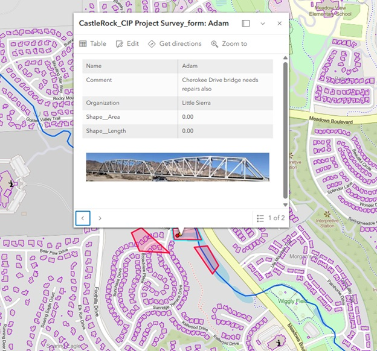
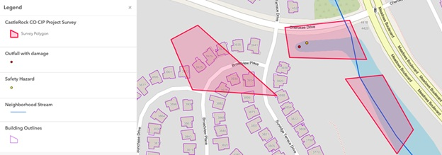

Capital Inprovement Project that evaluates the damage of an Outfall
GIS-based Capital Improvement Planning dashboard for Castle Rock, CO. This project uses ArcGIS Pro, Survey123, and Experience Builder to collect and visualize field data, supporting real-time infrastructure assessment and decision-making.
↑ Zoom and click features to explore. Layers were created in ArcGIS Pro, exported to GeoJSON, and displayed here using Leaflet.
Infrastructure and stream data was downloaded from the Douglas County CO GIS open data portal and the Town of Castle Rock Data Catalog. A project map was created in ArcGIS Pro using these datasets as a base. Field technicians then collected condition data on mobile devices using Survey123, with submissions feeding directly into ArcGIS Online. Results were visualized in an Experience Builder dashboard for real-time infrastructure assessment and decision-making. Data was then exported to GeoJSON and displayed interactively using Leaflet.
Outfall with damamage is identified by a Field Technician and colleceted with ArcGIS Field Maps on Android Phone




